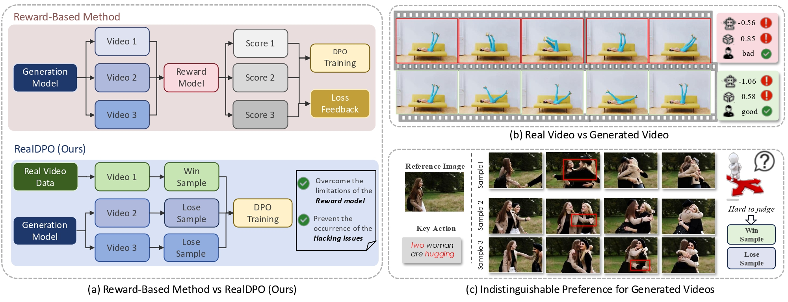
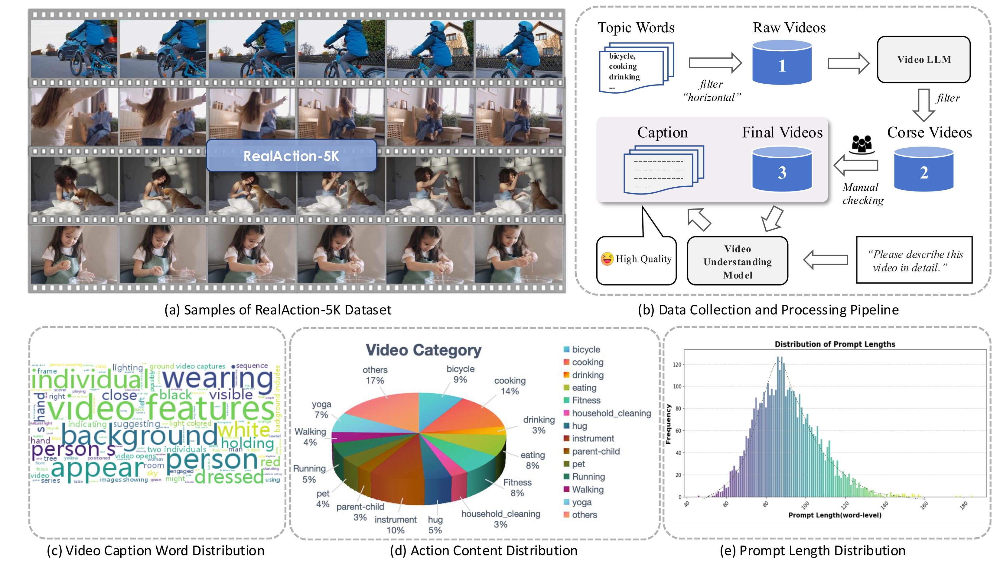
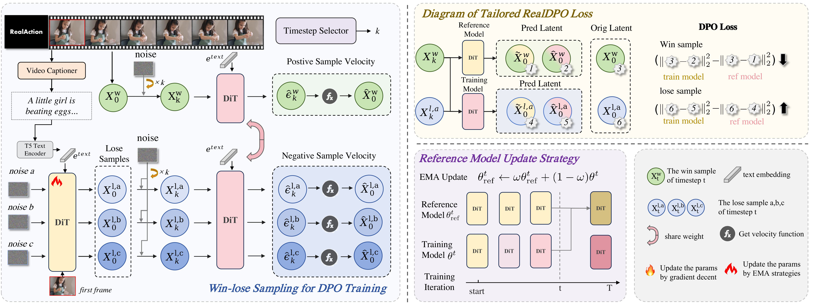
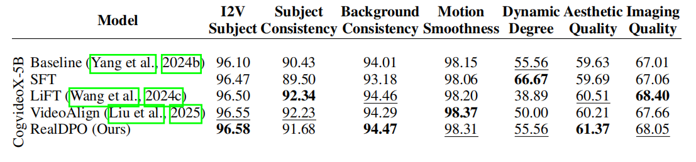

Overview
- We propose RealDPO, a novel training pipeline for action-centric video generation that leverages real-world data as preference signals to contrastively reveal and correct the model's inherent mistakes, addressing the limitations of existing reward models and preference alignment methods.
- We design a tailored DPO loss for our video generation training objective, enabling efficient and effective preference alignment without the scalability and bias issues of prior approaches.
- We introduce RealAction-5K, a compact yet high-quality curated dataset focused on human daily actions, specifically crafted to advance preference learning for video generation models and broader applications.
Abstract
Video generative models have recently achieved notable advancements in synthesis quality. However, generating complex motions remains a critical challenge, as existing models often struggle to produce natural, smooth, and contextually consistent movements. This gap between generated and real-world motions limits their practical applicability. To address this issue, we introduce RealDPO, a novel alignment paradigm that leverages real-world data as positive samples for preference learning, enabling more accurate motion synthesis. Unlike traditional supervised fine-tuning (SFT), which offers limited corrective feedback, RealDPO employs Direct Preference Optimization (DPO) with a tailored loss function to enhance motion realism. By contrasting real-world videos with erroneous model outputs, RealDPO enables iterative self-correction, progressively refining motion quality. To support post-training in complex motion synthesis, we propose RealAction-5K, a curated dataset of high-quality videos capturing human daily activities with rich and precise motion details. Extensive experiments demonstrate that RealDPO significantly improves video quality, text alignment, and motion realism compared to state-of-the-art models and existing preference optimization techniques.
Can we align video generative models using real data as preference data without a reward model?

(a) Comparison between using the reward model to score synthetic data for preference learning and our RealDPO method, which uses high-quality real data as win samples. Our method avoids the limitations of the reward model and the associated hacking issues. (b) Comparison between the video generated by the pretrained model and the real video for the same scene. The three scores on the right represent the scores given by the reward model from VisionReward, the human action metric from VBench, and human preference, respectively. It can be observed that while the existing reward model and VBench can evaluate semantic correctness, they are limited in assessing human motion quality. (c) Three model-generated examples from the same prompt, each with different initial noise, exhibit poor limb interaction, making it challenging for human annotators to identify which sample should be chosen as the win sample for reward model training.
Overview of the RealAction-5K Dataset

(a) Samples of RealAction-5K Dataset (b) Data Collection and Processing Pipeline (c) Video Caption Word Distribution (d) Action Content Distribution (e) Prompt Length Distribution
The RealDPO Framework

We use real data as the win samples in DPO, and illustrate the data pipeline on the left hand side. We present the RealDPO loss, and reference model update strategy on the right hand side.
Results
Quantitative Comparisons with baselines and reward-based methods via VBench-I2V, on RealAction-TestBench.
BibTeX
@misc{
guo2025realdpo,
title={RealDPO: Real or Not Real, that is the Preference},
author={Guo Cheng and Danni Yang and Ziqi Huang and Jianlou Si and Chenyang Si and Ziwei Liu},
year={2025},
eprint={xxxx.xxxxx},
achivePrefix={arXiv},
primaryClass={cs.CV},
url={https://arxiv.org/abs/xxxx.xxxxx},
}